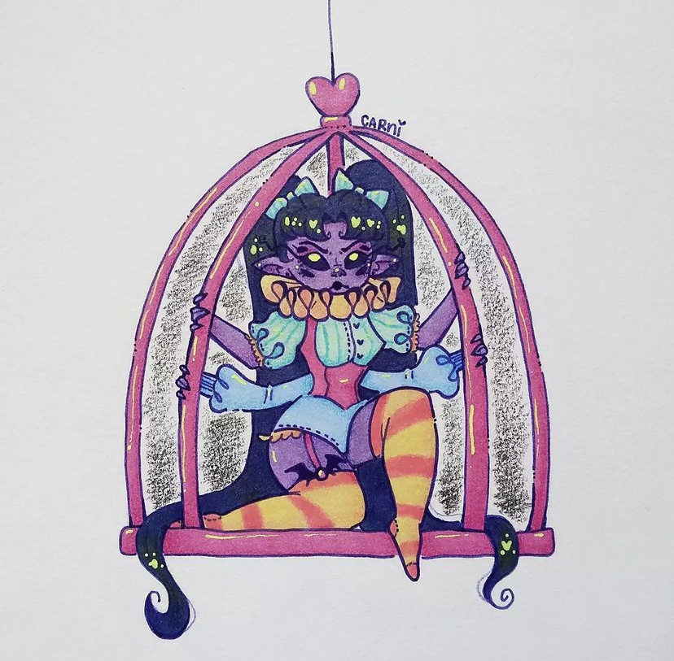
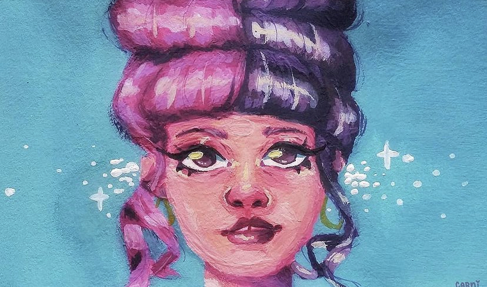
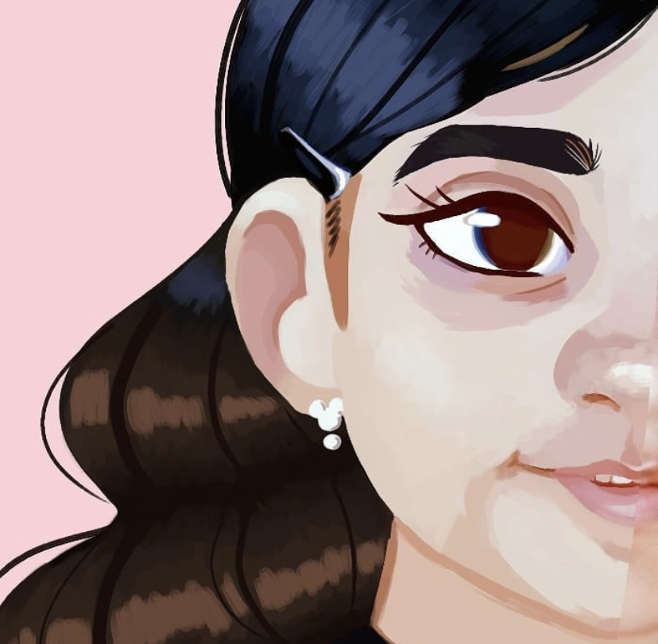
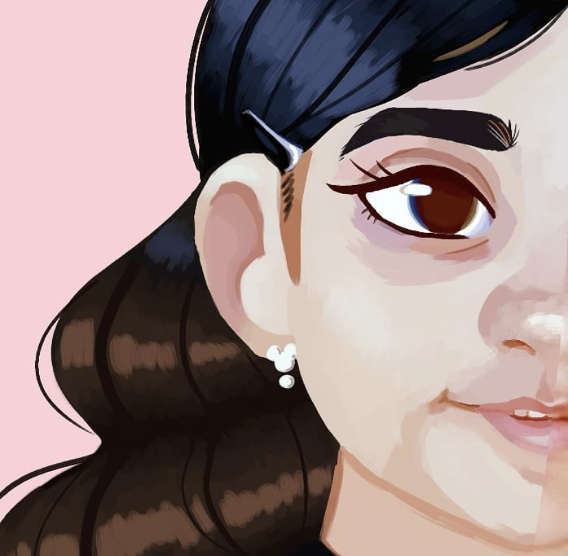

Kaitlyn Chavez
Kaitlyn Chavez is a 19-year-old artist. She loves drawing very much. She has been making art since she was very young. She found her passion while in the second grade. Cartoons and comics are her primary sources of inspiration. The show My Little Pony is what first struck her interest in art. She started off drawing on spiral notebooks and scrap paper. She would also be found drawing on her family computer, using the MS Paint program and the computer mouse. She would draw dozens of characters that she created herself. She continues to draw those same ones today with her current artistic skills.
Kaitlyn mainly does traditional artwork, occasionally diving into digital artwork as well. She likes to do a lot of mixed media work. Her favorite mediums are markers and colored pencils, but she has experience with most art supplies. Her subjects consist of pop culture characters. She took her first art class in middle school, during the first semester of eighth grade. She proceeded to take art classes every year of high school. She took AP studio art during her senior year. Senior year is also when she acted as a teaching assistant for one of the art classes at her school. Her artworks would serve as examples to the class for some of their assigned projects.
She continues to study her passion while in college. She earned a scholarship She is currently attending the University of California, Riverside, where she is an Art (Studio) Major. She has taken the Art Studio One course, where she created 50 art pieces over the course of 10 weeks. She has also taken various art theory courses. She hopes to earn her Bachelor of Arts Degree. She is looking to work in the art industry. She would like to curate an art exhibit featuring her work one day. She has also done some freelance work and has sold merchandise such as stickers and buttons with her drawings on them. Her artwork is really awesome and cool. She draws all day until her back and arms and back hurt. She once suffered a wrist injury from drawing too much. That is how dedicated she is to her craft. She eats drawing paper and drinks pen ink for breakfast lunch and dinner. One day her face will be on the hundred-dollar bill. She will rise to fame, gaining millions for painting a single dot on a large canvas. She currently has a very dedicated fan base, which will only grow in members. Investing in her work right now will be a very smart choice, as it will only rise in price with every year. Her biggest art piece was 50 feet tall. Her goal in life is to work on the hit television show SpongeBob SquarePants. She spends all her free time drawing. She is determined to create the most art pieces humanly possible. She will never stop drawing, even if her arm gets cut off. Drawing is the reason why she was born.
Experience
Art Teaching Assistant
• Handed out and organized art supplies
• Helped grade student art prjects
• Created example artworks for students
• TA'd for 2 highschool semesters
Education
UC Riverside
Portfolio



.PNG)
